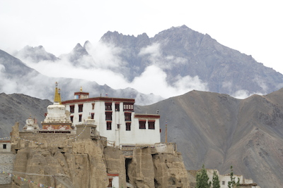
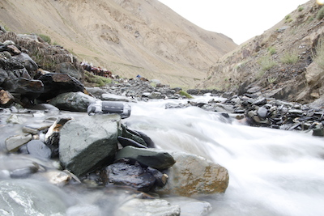
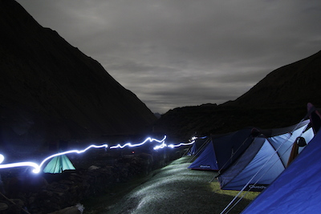

GHE 2015
Every great journey eventually comes to an end, but not before paving way for an even better one the next time.
GHE 2014 was an amazing, one of its kind, expedition. GHE 2015 promises to be even better. Spread over 11 days, packed with all kinds of action, from setting-up a micro-grid in a Himalayan village, to trekking, cycling and rafting in the mountains, to camping in some of the most picturesque locations in the world, the trip promises all of what made GHE 2014 a big success, plus more.
The itinerary would include first couple of days of acclimatization in Leh, when we would also visit the current E-Base in Leh, and help out with further improvements. Then we would be camping by Pangong Tso lake for a day, before setting off on the adventure part of the trip. This would begin with a day of cycling, followed by 4 days of trekking and one day of rafting. While out on our journey, we would also setup a micro-grid in a village, thus gifting them with year-long sustainable electricity. We would finish the trip with a visit to the Khardungla pass, after which we would attend the TEDx event happening in Leh.
For day-wise itinerary and trip essentials, please download the attached document.
GHE 2014 was an amazing, one of its kind, expedition. GHE 2015 promises to be even better. Spread over 11 days, packed with all kinds of action, from setting-up a micro-grid in a Himalayan village, to trekking, cycling and rafting in the mountains, to camping in some of the most picturesque locations in the world, the trip promises all of what made GHE 2014 a big success, plus more.
The itinerary would include first couple of days of acclimatization in Leh, when we would also visit the current E-Base in Leh, and help out with further improvements. Then we would be camping by Pangong Tso lake for a day, before setting off on the adventure part of the trip. This would begin with a day of cycling, followed by 4 days of trekking and one day of rafting. While out on our journey, we would also setup a micro-grid in a village, thus gifting them with year-long sustainable electricity. We would finish the trip with a visit to the Khardungla pass, after which we would attend the TEDx event happening in Leh.
For day-wise itinerary and trip essentials, please download the attached document.



Expedition Details
Expedition Grading
| The Global Expedition Trek is moderate. This means you will often venture into more remote country and will cross mountain passes. Altitudes are relatively low, reaching no higher than 4,900m/16,300ft. The trek is suitable for anyone who loves hill walking and leads a healthy, active lifestyle. As a minimum we recommend you start training four to six weeks prior to the trip, walking for at least 3km, three times a week. |
Total Distance To Be Covered : 590kms
| Trek Distance: - 30Kms |
| Raft Distance: - 30Kms |
| Cycling Distance: - 30Kms |
| Travel distance by private vehicle:- 500Kms |
Climate and Temperature
Average day time temperature on the trek is 20 deg C and night time temperatures could drop to 10 deg C. However you should be ready for inclement weather in any case as weather has become highly unpredictable and can change quickly at altitudes. As comically seen, it is said that in Ladakh one can get sun stroke and frost bite at the same time! This tells us a lot about the type of weather that you must expect.
Passport, VISA & Vaccinations
It is necessary that all travelers to India obtain a tourist visa before departure. visa is required for EU passport holders. Holders of non-EU passports are advised to check whether they require a visa. There are no compulsory vaccinations although it is strongly recommended that you are vaccinated against: Typhoid; Hepatitis A and B. Tetanus and polio vaccinations should also be up to date at the time of travel. You should contact your doctor prior to travel to obtain these vaccinations.
Medical Aid
The Expedition takes us through remote regions where professional medical help may not be available. We carry with us a comprehensive medical first-aid kit advised by doctor. Besides our Tour Leaders, who are not much qualified medically, we will have a separate paramedic who is competent enough to give first-aid if and when required. Carry any and all personal medication that you may need, and its an absolute must to let us know well in advance should you be suffering from any particular ailment.